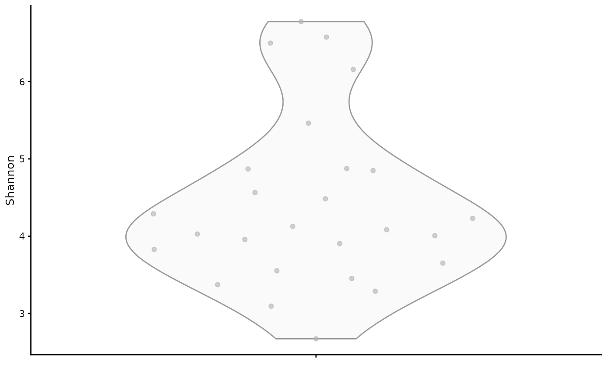
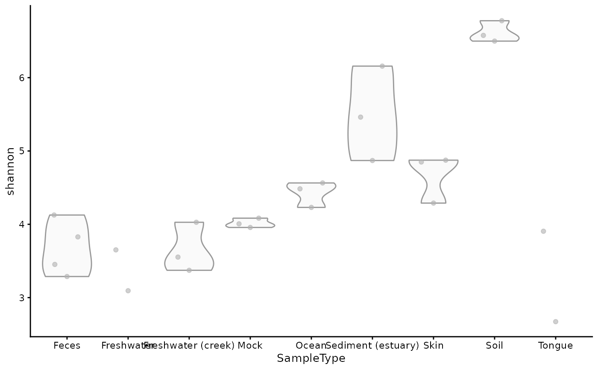
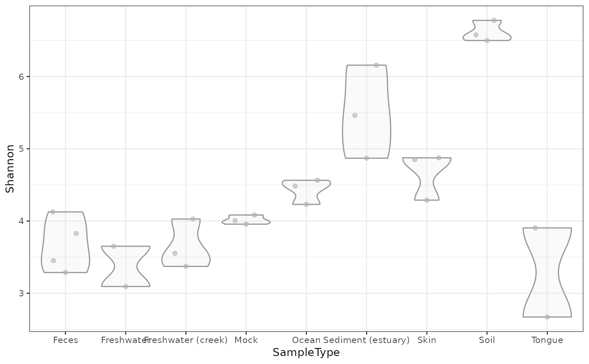
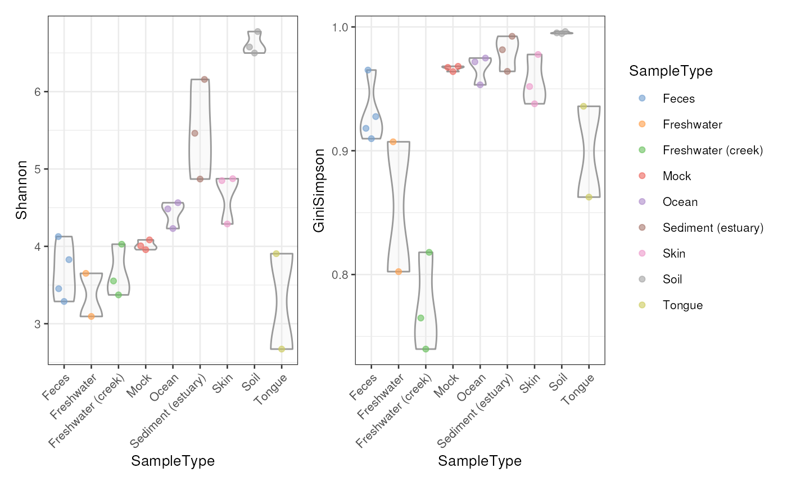

Several functions for calculating (alpha) diversity indices, including
the vegan package options and some others.
estimateDiversity(
x,
assay.type = "counts",
assay_name = NULL,
index = c("coverage", "fisher", "gini_simpson", "inverse_simpson",
"log_modulo_skewness", "shannon"),
name = index,
...
)
# S4 method for SummarizedExperiment
estimateDiversity(
x,
assay.type = "counts",
assay_name = NULL,
index = c("coverage", "fisher", "gini_simpson", "inverse_simpson",
"log_modulo_skewness", "shannon"),
name = index,
...,
BPPARAM = SerialParam()
)
# S4 method for TreeSummarizedExperiment
estimateDiversity(
x,
assay.type = "counts",
assay_name = NULL,
index = c("coverage", "faith", "fisher", "gini_simpson", "inverse_simpson",
"log_modulo_skewness", "shannon"),
name = index,
tree_name = "phylo",
...,
BPPARAM = SerialParam()
)
estimateFaith(
x,
tree = "missing",
assay.type = "counts",
assay_name = NULL,
name = "faith",
...
)
# S4 method for SummarizedExperiment,phylo
estimateFaith(
x,
tree,
assay.type = "counts",
assay_name = NULL,
name = "faith",
node_lab = NULL,
...
)
# S4 method for TreeSummarizedExperiment,missing
estimateFaith(
x,
assay.type = "counts",
assay_name = NULL,
name = "faith",
tree_name = "phylo",
...
)a SummarizedExperiment object or TreeSummarizedExperiment.
The latter is recommended for microbiome data sets and tree-based alpha diversity indices.
the name of the assay used for calculation of the sample-wise estimates.
a single character value for specifying which
assay to use for calculation.
(Please use assay.type instead. At some point assay_name
will be disabled.)
a character vector, specifying the diversity measures
to be calculated.
a name for the column(s) of the colData the results should be stored in. By default this will use the original names of the calculated indices.
optional arguments:
threshold: A numeric value in the unit interval,
determining the threshold for coverage index. By default,
threshold is 0.9.
quantile: Arithmetic abundance classes are evenly cut up to to
this quantile of the data. The assumption is that abundances higher than
this are not common, and they are classified in their own group.
By default, quantile is 0.5.
num_of_classes: The number of arithmetic abundance classes
from zero to the quantile cutoff indicated by quantile.
By default, num_of_classes is 50.
only.tips: A boolean value specifying whether to remove internal
nodes when Faith's index is calculated. When only.tips=TRUE, those
rows that are not tips of tree are removed.
(By default: only.tips=FALSE)
A
BiocParallelParam
object specifying whether calculation of estimates should be parallelized.
a single character value for specifying which
rowTree will be used to calculate faith index.
(By default: tree_name = "phylo")
A phylogenetic tree that is used to calculate 'faith' index.
If x is a TreeSummarizedExperiment, rowTree(x) is
used by default.
NULL or a character vector specifying the links between rows and
node labels of tree. If a certain row is not linked with the tree, missing
instance should be noted as NA. When NULL, all the rownames should be found from
the tree. (By default: node_lab = NULL)
x with additional colData named *name*
The available indices include the ‘Coverage’, ‘Faith's phylogenetic diversity’, ‘Fisher alpha’, ‘Gini-Simpson’, ‘Inverse Simpson’, ‘log-modulo skewness’, and ‘Shannon’ indices. See details for more information and references.
Alpha diversity is a joint quantity that combines elements or community richness and evenness. Diversity increases, in general, when species richness or evenness increase.
By default, this function returns all indices.
'coverage': Number of species needed to cover a given fraction of the ecosystem (50 percent by default). Tune this with the threshold argument.
'faith': Faith's phylogenetic alpha diversity index measures how long the taxonomic distance is between taxa that are present in the sample. Larger values represent higher diversity. Using this index requires rowTree. (Faith 1992)
If the data includes features that are not in tree's tips but in
internal nodes, there are two options. First, you can keep those features,
and prune the tree to match features so that each tip can be found from
the features. Other option is to remove all features that are not tips.
(See only.tips parameter)
'fisher': Fisher's alpha; as implemented in
vegan::fisher.alpha. (Fisher et al. 1943)
'gini_simpson': Gini-Simpson diversity i.e. \(1 - lambda\),
where \(lambda\) is the
Simpson index, calculated as the sum of squared relative abundances.
This corresponds to the diversity index
'simpson' in vegan::diversity.
This is also called Gibbs–Martin, or Blau index in sociology,
psychology and management studies. The Gini-Simpson index (1-lambda)
should not be
confused with Simpson's dominance (lambda), Gini index, or
inverse Simpson index (1/lambda).
'inverse_simpson': Inverse Simpson diversity: \(1/lambda\) where \(lambda=sum(p^2)\) and p refers to relative abundances. This corresponds to the diversity index 'invsimpson' in vegan::diversity. Don't confuse this with the closely related Gini-Simpson index
'log_modulo_skewness': The rarity index characterizes the concentration of species at low abundance. Here, we use the skewness of the frequency distribution of arithmetic abundance classes (see Magurran & McGill 2011). These are typically right-skewed; to avoid taking log of occasional negative skews, we follow Locey & Lennon (2016) and use the log-modulo transformation that adds a value of one to each measure of skewness to allow logarithmization.
'shannon': Shannon diversity (entropy).
Beisel J-N. et al. (2003) A Comparative Analysis of Diversity Index Sensitivity. Internal Rev. Hydrobiol. 88(1):3-15. https://portais.ufg.br/up/202/o/2003-comparative_evennes_index.pdf
Bulla L. (1994) An index of diversity and its associated diversity measure. Oikos 70:167--171
Faith D.P. (1992) Conservation evaluation and phylogenetic diversity. Biological Conservation 61(1):1-10.
Fisher R.A., Corbet, A.S. & Williams, C.B. (1943) The relation between the number of species and the number of individuals in a random sample of animal population. Journal of Animal Ecology 12, 42-58.
Locey K.J. & Lennon J.T. (2016) Scaling laws predict global microbial diversity. PNAS 113(21):5970-5975.
Magurran A.E., McGill BJ, eds (2011) Biological Diversity: Frontiers in Measurement and Assessment. (Oxford Univ Press, Oxford), Vol 12.
Smith B. & Wilson JB. (1996) A Consumer's Guide to Diversity Indices. Oikos 76(1):70-82.
data(GlobalPatterns)
tse <- GlobalPatterns
# All index names as known by the function
index <- c("shannon","gini_simpson","inverse_simpson", "coverage", "fisher",
"faith", "log_modulo_skewness")
# Corresponding polished names
name <- c("Shannon","GiniSimpson","InverseSimpson", "Coverage", "Fisher",
"Faith", "LogModSkewness")
# Calculate diversities
tse <- estimateDiversity(tse, index = index)
# The colData contains the indices with their code names by default
colData(tse)[, index]
#> DataFrame with 26 rows and 7 columns
#> shannon gini_simpson inverse_simpson coverage fisher faith
#> <numeric> <numeric> <numeric> <integer> <numeric> <numeric>
#> CL3 6.57652 0.994656 187.1298 1113 1035.008 250.535
#> CC1 6.77660 0.995212 208.8436 1374 1107.495 262.263
#> SV1 6.49849 0.996290 269.5441 829 854.279 208.458
#> M31Fcsw 3.82837 0.927599 13.8119 71 313.719 117.876
#> M11Fcsw 3.28767 0.909738 11.0789 37 289.979 119.825
#> ... ... ... ... ... ... ...
#> TS28 4.12654 0.965175 28.7152 62 337.892 124.651
#> TS29 3.45277 0.918098 12.2097 46 318.969 121.206
#> Even1 4.08366 0.968198 31.4447 51 546.578 179.938
#> Even2 3.95691 0.963916 27.7129 47 401.760 140.810
#> Even3 4.00637 0.967340 30.6189 49 344.939 126.569
#> log_modulo_skewness
#> <numeric>
#> CL3 2.06142
#> CC1 2.06142
#> SV1 2.06142
#> M31Fcsw 2.06141
#> M11Fcsw 2.06141
#> ... ...
#> TS28 2.06141
#> TS29 2.06142
#> Even1 2.06141
#> Even2 2.06141
#> Even3 2.06141
# Removing indices
colData(tse)[, index] <- NULL
# 'threshold' can be used to determine threshold for 'coverage' index
tse <- estimateDiversity(tse, index = "coverage", threshold = 0.75)
# 'quantile' and 'num_of_classes' can be used when
# 'log_modulo_skewness' is calculated
tse <- estimateDiversity(tse, index = "log_modulo_skewness",
quantile = 0.75, num_of_classes = 100)
# It is recommended to specify also the final names used in the output.
tse <- estimateDiversity(tse,
index = c("shannon", "gini_simpson", "inverse_simpson", "coverage",
"fisher", "faith", "log_modulo_skewness"),
name = c("Shannon", "GiniSimpson", "InverseSimpson", "Coverage",
"Fisher", "Faith", "LogModSkewness"))
# The colData contains the indices by their new names provided by the user
colData(tse)[, name]
#> DataFrame with 26 rows and 7 columns
#> Shannon GiniSimpson InverseSimpson Coverage Fisher Faith
#> <numeric> <numeric> <numeric> <integer> <numeric> <numeric>
#> CL3 6.57652 0.994656 187.1298 1113 1035.008 250.535
#> CC1 6.77660 0.995212 208.8436 1374 1107.495 262.263
#> SV1 6.49849 0.996290 269.5441 829 854.279 208.458
#> M31Fcsw 3.82837 0.927599 13.8119 71 313.719 117.876
#> M11Fcsw 3.28767 0.909738 11.0789 37 289.979 119.825
#> ... ... ... ... ... ... ...
#> TS28 4.12654 0.965175 28.7152 62 337.892 124.651
#> TS29 3.45277 0.918098 12.2097 46 318.969 121.206
#> Even1 4.08366 0.968198 31.4447 51 546.578 179.938
#> Even2 3.95691 0.963916 27.7129 47 401.760 140.810
#> Even3 4.00637 0.967340 30.6189 49 344.939 126.569
#> LogModSkewness
#> <numeric>
#> CL3 2.06142
#> CC1 2.06142
#> SV1 2.06142
#> M31Fcsw 2.06141
#> M11Fcsw 2.06141
#> ... ...
#> TS28 2.06141
#> TS29 2.06142
#> Even1 2.06141
#> Even2 2.06141
#> Even3 2.06141
# Compare the indices visually
pairs(colData(tse)[, name])

# Plotting the diversities - use the selected names
library(scater)
plotColData(tse, "Shannon")

# ... by sample type
plotColData(tse, "Shannon", "SampleType")

# \donttest{
# combining different plots
library(patchwork)
plot_index <- c("Shannon","GiniSimpson")
plots <- lapply(plot_index,
plotColData,
object = tse,
x = "SampleType",
colour_by = "SampleType")
plots <- lapply(plots,"+",
theme(axis.text.x = element_text(angle=45,hjust=1)))
names(plots) <- plot_index
plots$Shannon + plots$GiniSimpson + plot_layout(guides = "collect")

# }